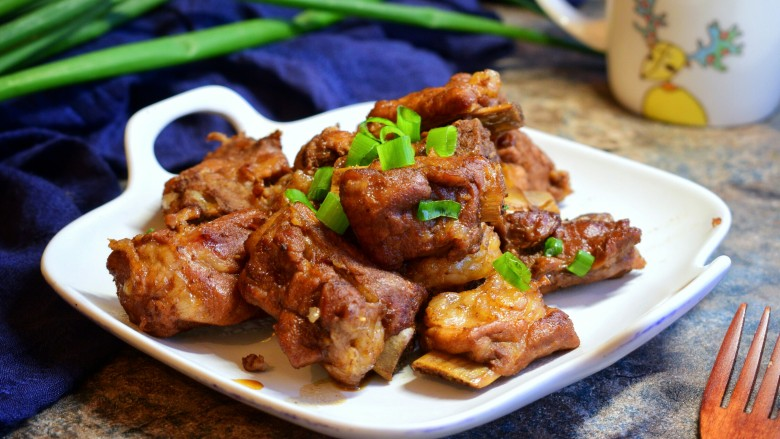

Home
红烧排骨

家里有个小吃货，喊着要吃排骨，当妈的马上行动！
需要食材
- 排骨：600克
- 葱：1颗
- 姜：6克
- 油：20克
- 盐：1茶匙
- 冰糖：10克
- 生抽：2汤勺
- 老抽：半汤勺
- 料酒：2汤勺
- 花椒：8粒
- 八角：1颗
- 香叶：2片
- 桂皮：1小块
做法步骤
- 排骨加冷水，入锅，大火煮沸，撇出浮沫
- 排骨捞出备用
- 葱打结姜切片
- 准备好花椒、八角、香叶、桂皮
- 锅中加油，加冰糖，小火加热
- 冰糖变成咖啡色
- 加排骨
- 炒至上色
- 加葱姜
- 加花椒、桂皮、八角、香叶
- 加料酒
- 加老抽
- 加生抽
- 加入没过排骨的开水
- 加盖，大火烧开，转小火煮40分钟
- 加盐，大火收汁即可